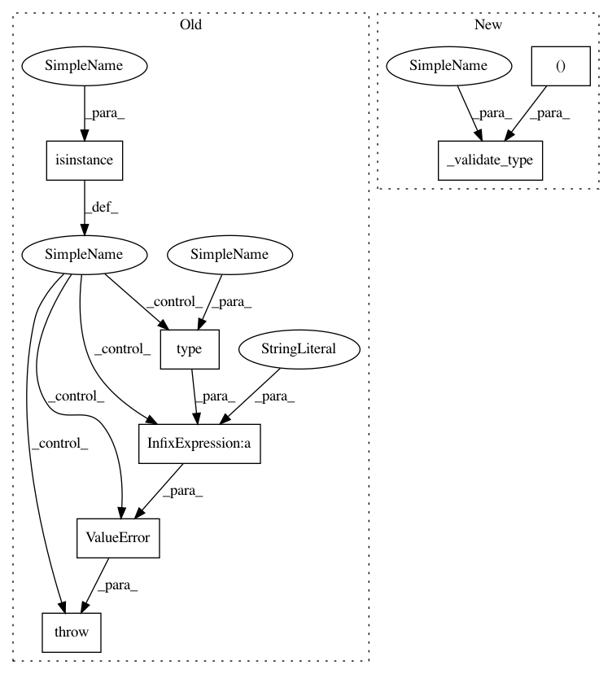

91473147e57464173dedb00ce20f3d5aefd883bd,mne/viz/ica.py,,plot_ica_properties,#Any#Any#Any#Any#Any#Any#Any#Any#Any#Any#Any#Any#Any#,259
Before Change
_validate_type(ica, ICA, "ica", "ICA")
if isinstance(plot_std, bool):
num_std = 1. if plot_std else 0.
elif isinstance(plot_std, (float, int)):
num_std = plot_std
plot_std = True
else:
raise ValueError("plot_std has to be a bool, int or float, "
"got %s instead" % type(plot_std))
// if no picks given - plot the first 5 components
limit = min(5, ica.n_components_) if picks is None else len(ica.ch_names)
picks = _picks_to_idx(ica.info, picks, "all")[:limit]
After Change
// -------------------------
_validate_type(inst, (BaseRaw, BaseEpochs), "inst", "Raw or Epochs")
_validate_type(ica, ICA, "ica", "ICA")
_validate_type(plot_std, (bool, "numeric"), "plot_std")
if isinstance(plot_std, bool):
num_std = 1. if plot_std else 0.
else:
plot_std = True
In pattern: SUPERPATTERN
Frequency: 3
Non-data size: 7
Instances
Project Name: mne-tools/mne-python
Commit Name: 91473147e57464173dedb00ce20f3d5aefd883bd
Time: 2020-10-12
Author: larson.eric.d@gmail.com
File Name: mne/viz/ica.py
Class Name:
Method Name: plot_ica_properties
Project Name: mne-tools/mne-python
Commit Name: e68d1963fee51c78969eb2523e9877a62024fb8a
Time: 2020-05-14
Author: larson.eric.d@gmail.com
File Name: mne/cov.py
Class Name:
Method Name: _regularized_covariance
Project Name: mne-tools/mne-python
Commit Name: 7c1233ba612bdb08d640c924ef4220b2fe13fb71
Time: 2020-09-25
Author: larson.eric.d@gmail.com
File Name: mne/io/reference.py
Class Name:
Method Name: add_reference_channels